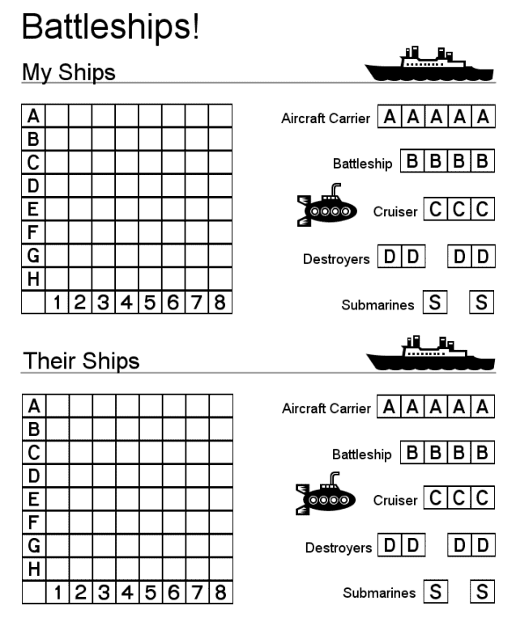

| @{rows #s } |
Ships take up multiple grid squares, with each type of ship having a different number of ships (aircraft carrier 5, battleship 4, etc.). Ships are randomly placed by the program, or the player is allowed to place ships.
Whether or not the ships are placed by the program, the program ensures that all ships are within the bounds of the grid. There are two grids, one for the player and one for the computer player (game AI).
Hits and misses are marked on each grid. The program notifies the player when a ship on either grid has been sunk, and the program indicates when the game is over and which player won. The computer player (game AI) makes follow-up shots when it hits, so that whenever it hits one of the player's ships it fires at adjacent squares until it has sunk the ship.